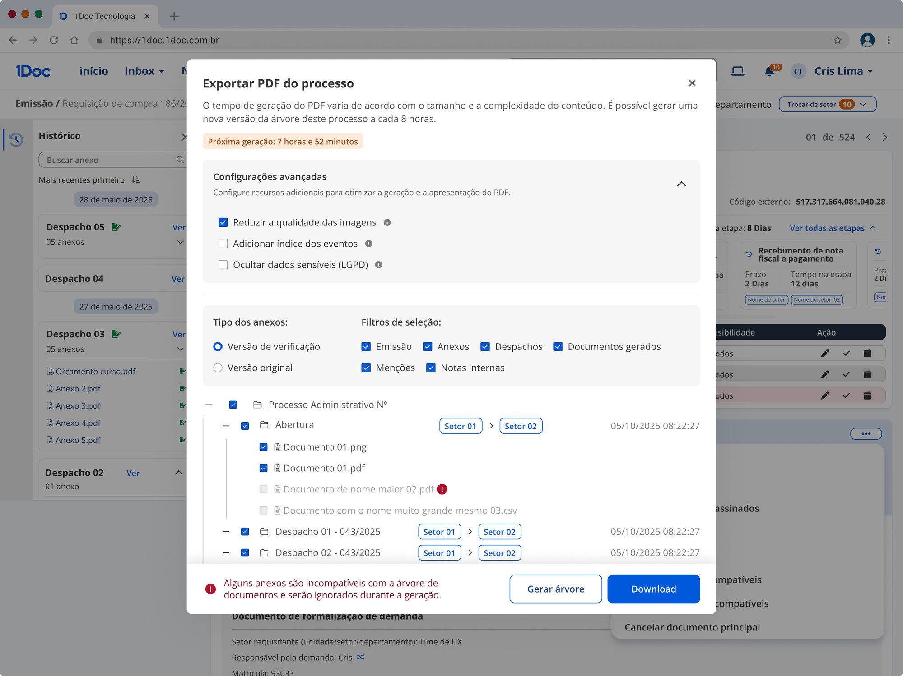

Ananindeua (PA)
Uses the Document Tree to find a process’s page numbers and cite its content in communications with the Municipal Attorney’s Office.
Case 03 · 1Doc
How we investigated the failures of the Document Tree, the PDF export of administrative processes used for accountability reporting, and shaped its evolution through interviews, a survey with more than 24,000 responses, and a new technical solution.

The Document Tree converts and merges a native 1Doc process, along with all of its attachments, into a single compiled, paginated PDF.
It was built to meet a core municipal need: producing processes for accountability submissions to external entities, agencies, and systems, including oversight and audit bodies.
Over time, the Document Tree began failing at a significant rate. Every week, several tickets were opened for manual reprocessing, eating up the engineering team’s time and delaying the roadmap.
The problem became clear in Mata de São João (BA), the source of a string of incidents. The team’s tech lead and PM made an on-site visit to the municipality to understand what was triggering the failures. There, the Document Tree is used mainly for accountability submissions to the Bahia Municipal Audit Court (TCM-BA), and generation errors were behind a large share of the tickets.
To find out whether the same problems showed up in other municipalities, we asked the Customer Success team to point us to clients who were unhappy with the Document Tree, and we ran remote interviews with each of them.
Uses the Document Tree to find a process’s page numbers and cite its content in communications with the Municipal Attorney’s Office.
Generates the Document Tree daily to cite pages in communications with the Municipal Attorney’s Office.
Daily use in procurement processes and to bring transparency to administrative acts.
Occasional use, for requests from city council members, the Public Prosecutor’s Office, ITBI (property transfer tax), and health. They find the output clear and straightforward.
To broaden the sample, we launched a quick survey on the export screen, asking who uses the Document Tree, how often, and what for.
How often people use it depends on the municipality’s context. Some users look up and share processes every day; others only use the feature in specific situations, such as accountability reporting.
Slow processing and a generation cap that doesn’t meet daily demand.
Users say images, Word files, and ZIPs should also be included in the Document Tree, since they are part of the processes.
Choosing specific dispatches and attachments while keeping signature verification; today, signatures are only available in the full version.
Bug. Text and paragraphs filled in under subjects don’t appear, making the process hard to follow.
Masking personal information provided in the process, in line with the LGPD.
Moving the page numbers and adding a cover page and table of contents to the files.
The Document Tree is generated just to find a page number and cite it in other documents.
Users expect to use Ctrl + F to find information.
Documents linked to the main process should also be included in full.
“When taxpayers attach documents that aren’t PDFs, like images and others, they don’t show up in the tree’s attachments. This causes problems when auditing the requests. We usually use this tool to send things to the Attorney’s Office. But they could also be given access if the link to the requests were included, so the tool could be more useful to the requester themselves if they ask for a copy... even so, it would be better if there were also information about the other attachments, not just the ones in PDF format.”Santa Vitória do Palmar City Hall
“I’d like the tree to accept every document extension. Right now it only accepts PDFs. Here at the culture department we serve people with many difficulties who can’t tell the difference between a JPG and a PDF. So when they apply to a public call and we need to send the applications to external jurors hired by the City Hall (people without internal access to 1Doc), we’d like to use the document tree. But today that isn’t possible, since not every document would be sent for review.”Taubaté City Hall
“I wish there weren’t an 8-hour wait to generate a new tree, that page numbers didn’t change because of new signatures, that it didn’t split a process into several files, that it never took more than 10 minutes to generate a tree regardless of the process size, that it came compressed somehow, as a light document optimized to feed other systems (like SAJ-Procuradorias, another Softplan product, or email). I wish I could select only some dispatches but with authenticity verification, which isn’t available today, without generating new page numbers. That each file/dispatch had an absolute page position. I wish files other than "*.pdf" were also included in the tree. Or just ban the other file types altogether.”São Sebastião City Hall
Since many clients generated the Document Tree just to find page numbers, we tested a prototype of a digital folder currently in development with them, to see whether its viewing and navigation would meet that need.
The engine that merges the PDFs, previously based solely on Ghostscript, now uses 1PDF/QPDF. If a file can’t be generated through the new path, the system falls back to the original one.
We also created an “anomaly” queue dedicated to the most vector-heavy, large files or those that fail during processing: anything the regular queue can’t handle is rerouted there. With the new code, the small, medium and large queues also started processing faster.
The solution is already live and also fixed bugs such as titles and paragraphs not showing up in the PDF.
During the project, I found that generated trees were stored on the platform forever, even after the user had already downloaded or used the file, which increased our AWS storage costs.
These files were accessed through notifications, and people rarely went back there to look for a tree generated long ago: they were more likely to generate a new one.
The new exported PDFs screen gives users more control and limits storage to 30 days. After that, the files are deleted.
The improvements project is planned for Q1-2026.
We validated the prototype over video calls with 3 of the 4 customers we interviewed, and all of them approved the proposal.
“Anonymizing personal data is going to help us a lot (...) honestly, your proposal turned out even better than I imagined, I already want to use the feature.”Customer · prototype validation
With the technical solution in production, bugs, tickets and generation time all went down. Data covers April to August 2026, as of 08/04/2026.
[What you would take to the next project and what you would do differently.]